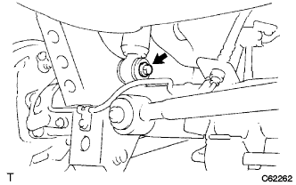
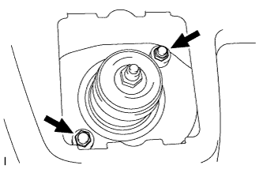

|
Remove the bolt and separate the speed sensor from the body.
Axle housing is supported by jack.
|  |
Fix the nut and remove the bolt of the shock absorber (loower side).
- ■ Attention ■
- The nut is turned around and remove it because it is an anti -nut.
|  |
Remove the two nuts and remove the rear shock absorber W/coil spring.